ผู้บริหาร · พ.ศ. 2469 ถึงปัจจุบัน
ทำเนียบนายกราชบัณฑิตยสภา
ผู้นำราชบัณฑิตยสภาและราชบัณฑิตยสถาน ตลอดหนึ่งศตวรรษ
- นายกตั้งแต่ พ.ศ. 2469
- 17 ท่าน
- ราชบัณฑิตยสภา · ราชบัณฑิตยสถาน
- 3 ยุค
- พ.ศ. 2469–2569
- 100 ปี
- ดำรงตำแหน่งนานที่สุด (รักษาการ)
- 22 ปี
ยุคที่ ๑
ราชบัณฑิตยสภา
พ.ศ. 2469–2476
สถาปนาโดยพระบาทสมเด็จพระปกเกล้าเจ้าอยู่หัว เมื่อวันที่ ๑๙ เมษายน พ.ศ. ๒๔๖๙
1 ท่าน
-
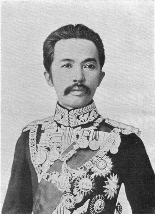
พ.ศ. 2469 พระเจ้าบรมวงศ์เธอ กรมพระดำรงราชานุภาพ
ยุคที่ ๒
ราชบัณฑิตยสถาน
พ.ศ. 2476–2558
ตามพระราชบัญญัติว่าด้วยราชบัณฑิตยสถาน
12 ท่าน
- พ.ศ. 2490–2512 รักษาการ ศาสตราจารย์พิเศษ พระยาอนุมานราชธน
-
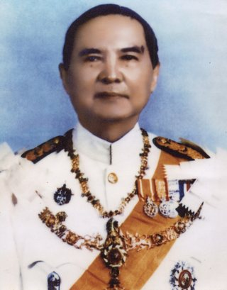
พ.ศ. 2512–2516 รักษาการ · 2516–2518 ศาสตราจารย์ พลตรี พระเจ้าวรวงศ์เธอ กรมหมื่นนราธิปพงศ์ประพันธ์ -
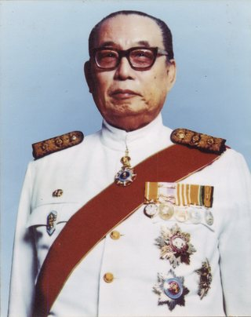
พ.ศ. 2518–2519 ศาสตราจารย์ สุกิจ นิมมานเหมินท์ - พ.ศ. 2519–2528 ศาสตราจารย์ เสริม วินิจฉัยกุล
-
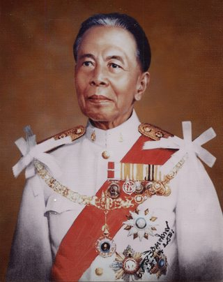
พ.ศ. 2528–2532 ศาสตราจารย์ พลโท พระยาศัลวิธานนิเทศ -
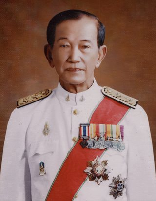
พ.ศ. 2528–2532 รักษาการ · 2532–2540 ศาสตราจารย์ พันโท ดร.บุญพฤกษ์ จาฏามระ -
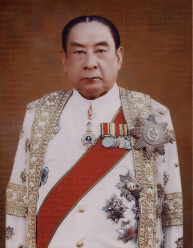
พ.ศ. 2540–2542 ศาสตราจารย์ ดร.ประยูร กาญจนดุล -
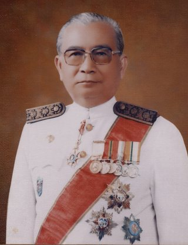
พ.ศ. 2542–2543 ศาสตราจารย์ ดร.ประเสริฐ ณ นคร -
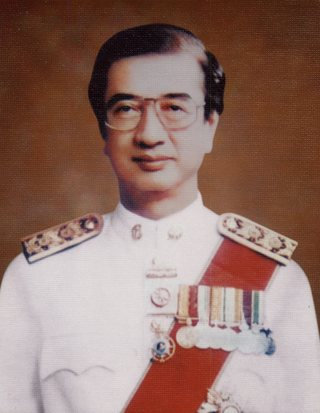
พ.ศ. 2544–2548 ศาสตราจารย์ ดร. นพ.อรรถสิทธิ์ เวชชาชีวะ -
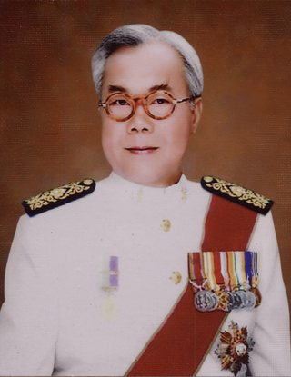
พ.ศ. 2548–2552 ศาสตราจารย์ ดร.ชัยอนันต์ สมุทวณิช -
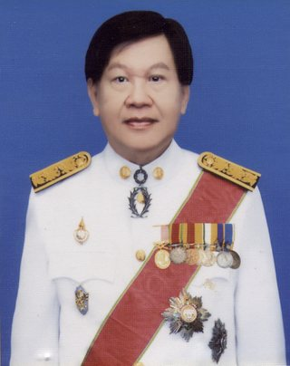
พ.ศ. 2552–2556 ศาสตราจารย์พิเศษ ดร.ปัญญา บริสุทธิ์ -
 พ.ศ. 2556–2558
ศาสตราจารย์พิเศษ ดร.สันทัด โรจนสุนทร
พ.ศ. 2556–2558
ศาสตราจารย์พิเศษ ดร.สันทัด โรจนสุนทร
ยุคที่ ๓
ราชบัณฑิตยสภา
พ.ศ. 2558–ปัจจุบัน
ตามพระราชบัญญัติราชบัณฑิตยสภา พ.ศ. ๒๕๕๘
6 ท่าน
-
พ.ศ. 2558
ศาสตราจารย์พิเศษ ดร.สันทัด โรจนสุนทร
-
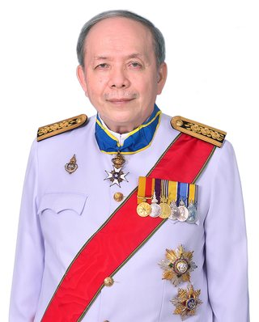
พ.ศ. 2558–2560 ศาสตราจารย์ ดร.ปกรณ์ อดุลพันธุ์ - พ.ศ. 2560–2562 ดร.โสภา ชูพิกุลชัย ชปีลมันน์
-
 พ.ศ. 2562–2564
ศาสตราจารย์เกียรติคุณ นพ.สุรพล อิสรไกรศีล
พ.ศ. 2562–2564
ศาสตราจารย์เกียรติคุณ นพ.สุรพล อิสรไกรศีล
-
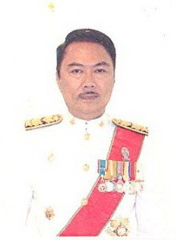
พ.ศ. 2564–2566 ศาสตราจารย์ ดร.สุรพล วิรุฬห์รักษ์ -
ปัจจุบัน
พ.ศ. 2566–ปัจจุบัน
ศาสตราจารย์เกียรติคุณ นพ.สุรพล อิสรไกรศีล
ผู้บริหารปัจจุบัน